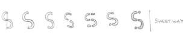
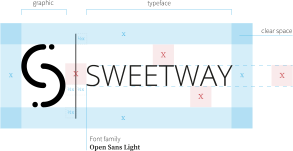
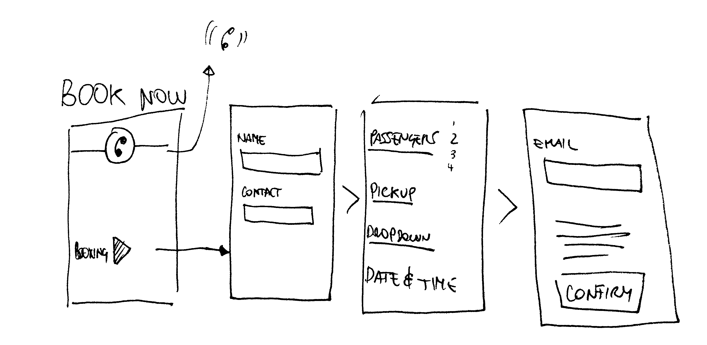
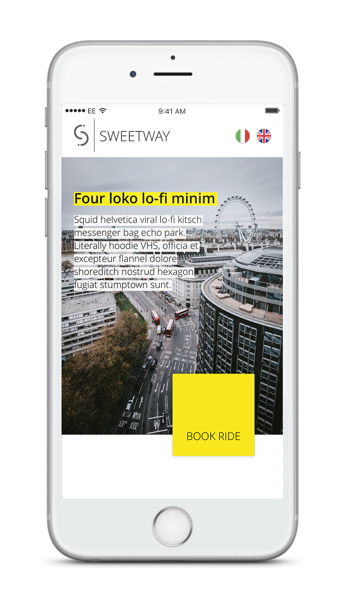

Sweetway is a small company based in London that offers airport transfers and generally medium-long journeys across the UK.
I led the design project and I developed the related web-app, drawing attention to the user experience and the responsiveness.
The first step was build a strong brand and design a well-rounded identity.
So I started with the logo.
Very first atom of the corporate identity, geometric, simply made by 2 graphic elements.
The color choice is related to key values like freshness, technology and innovation.
Open Sans is a fresh and modern font, that matches very well with the other elements.
Open Sans — Light Open Sans — Regular Open Sans — SemiboldThe website has been developed from scratch and written in Pug(formerly Jade)/HTML, styled with SASS/CSS and with a bunch of javascript and jQuery functions.